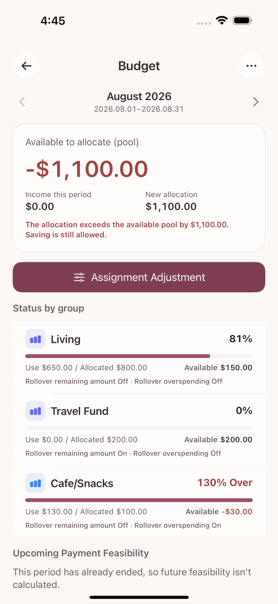
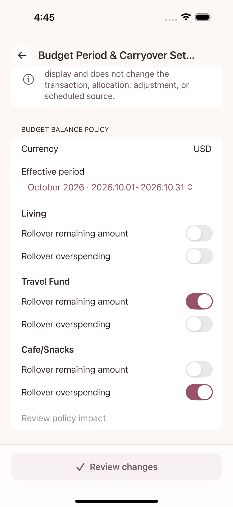
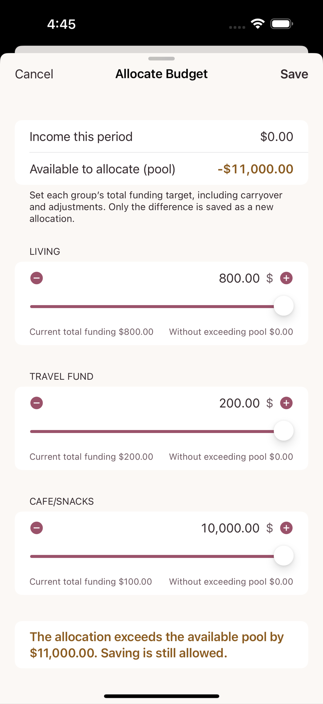
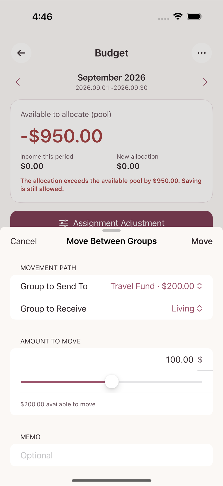

This chapter follows one imaginary example from start to finish. Every figure is a round number you can do in your head, and none of it is real user data. The goal is that by the end you can answer "why does a budget move differently from an account balance?" yourself.
| Budget group | Carryover switches | August allocated | August actually spent | Left at end of August |
|---|---|---|---|---|
| Living | Both off (returned to the pool) | $800 | $650 | +$150 |
| Travel Fund | Rollover remaining amount on | $200 | $0 | +$200 |
| Cafe/Snacks | Rollover overspending on | $100 | $130 | −$30 |
Say that on 1 August the Available to allocate (pool) was $1,100, and exactly 800 + 200 + 100 = $1,100 was allocated across the three groups, leaving the pool at $0.
Entering each expense under its category increases the spent amount of the budget group that category belongs to.

A negative amount left in Cafe/Snacks is not an error; it is a signal that you spent more than planned this month. It does not mean your account went negative — it means you went past the limit you set for that category.
Enter the $3,000 salary as an income transaction into the bank account. At that moment Available to allocate (pool) increases by $3,000. The August budget period has already been allocated, so this money becomes the funding for September.
There is no feature for allocating a salary in advance. You can only allocate money once it has been recorded as a real transaction. "I am due to be paid later this month" does not increase the amount available to allocate.
Every budget group has two carryover switches that you turn on and off separately for each sign of the amount left — Rollover remaining amount (when positive) and Rollover overspending (when negative). Switching one on keeps that amount in the same group; switching it off moves the amount to the Available to allocate (pool). The three groups in this example are set up as follows.
| Budget group | Rollover remaining amount | Rollover overspending | End of August | Group balance on 1 September | Change to the pool |
|---|---|---|---|---|---|
| Living | Off | Off | +$150 (positive) | $0 (reset) | +$150 returned |
| Travel Fund | On | — | +$200 (positive) | +$200 (kept) | No change |
| Cafe/Snacks | — | On | −$30 (negative) | −$30 (kept) | No change |

Neither combination of switches creates or destroys money. All that changes is whether the same amount stays "inside the group" or "goes back to the pool". In this example the pool on 1 September works out as follows.
Pool on 1 September = pool at end of August ($0) + August salary ($3,000)
+ amount returned by Living ($150)
= $3,150On the Allocate Budget screen you enter the total you want each group to have for this period (the target), and the screen works out the new allocation it will actually save by taking the amount already carried over into account. The difference is clearest in a group like Cafe/Snacks whose carryover is negative.
| Budget group | September carryover | Target for September | New allocation, calculated | Change to the pool |
|---|---|---|---|---|
| Living | $0 | $800 | $800 | −$800 |
| Travel Fund | $200 | $300 | $100 | −$100 |
| Cafe/Snacks | −$30 | $100 | $130 | −$130 |
For Cafe/Snacks you simply enter the target you want — "I want a $100 budget in September too" ($100) — and because last month's $30 overspend has to be covered first, the screen works out and saves a new allocation of $130 for you. You never have to do that arithmetic in your head.
Pool on 1 September = 3,150 − 800 − 100 − 130 = $2,120
The following identity has to hold at both points in time.
total budget value = available pool + amount left in every budget groupThe figures match exactly. Closing the period and reallocating moved money around; it did not create or lose any.
On the Allocate Budget screen each budget group name is a section heading, and beneath it the number field with − / + buttons and a slider (amount only, with no separate label) is the target allocation field. The "move between groups" flow described below is a separate screen.
If you allocated too much to one group, you can move money straight between two groups on the Move Between Groups screen, without going through the pool. The two groups' amounts still add up to the same total before and after the move (a zero-sum move).
